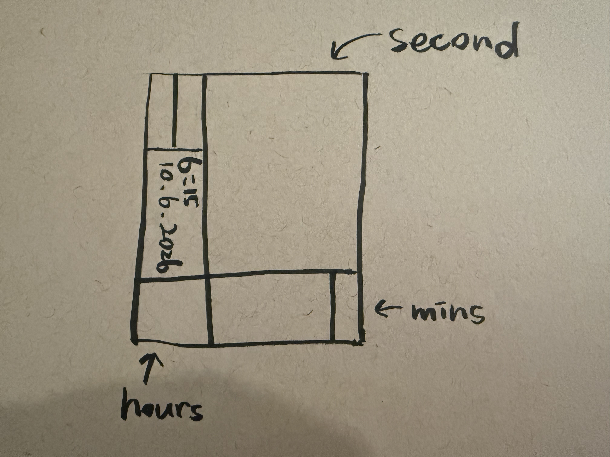
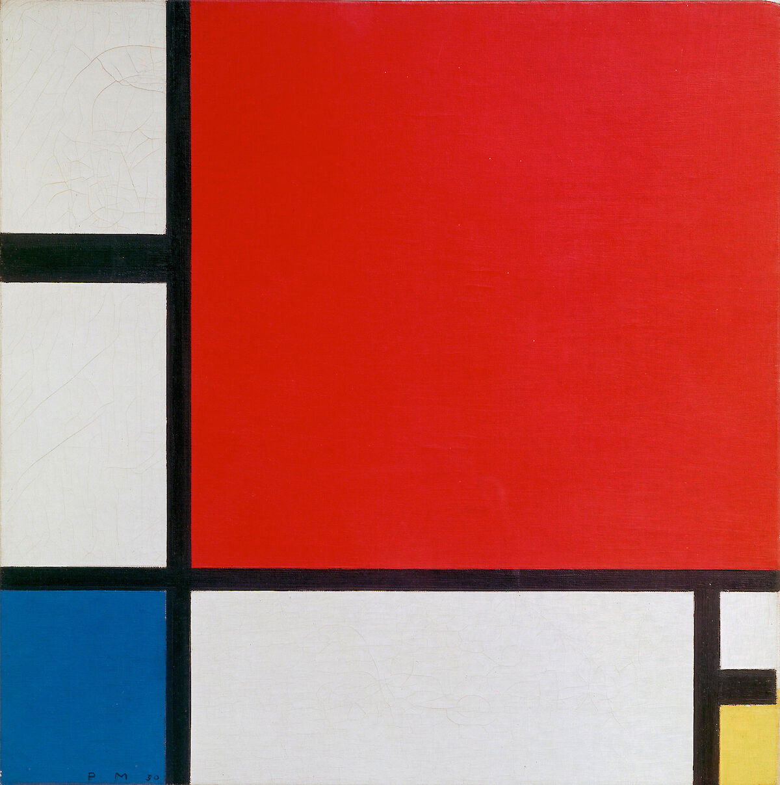
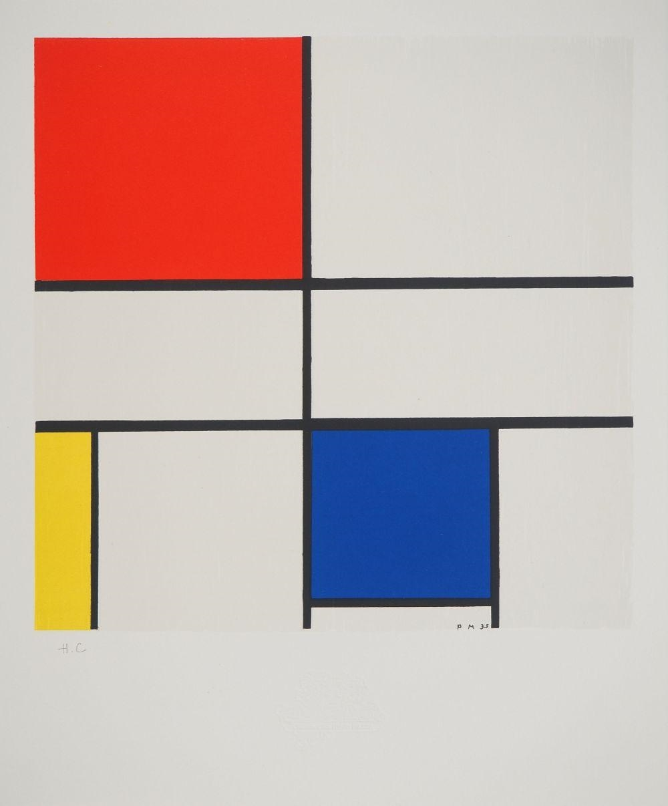

My work is titled Composition Clocks. It is an abstract clock piece inspired by Piet Mondrian’s Composition with Red, Blue, and Yellow. I retained the original work’s distinctive visual language. This includes the black horizontal and vertical lines, geometric color blocks, and the three primary colors of red, blue, and yellow. I adjusted the positions and sizes of some of the color blocks. This allows the composition to function as a clock while still maintaining the abstract feeling of the original work.
The three primary colors in the composition represent different units of time. The blue area in the upper right represents seconds. A new layer of rectangles appears every second. These rectangles continuously shrink inward. The blue also changes from light to dark and then back to light. The red area in the lower left represents the hours. It does not switch colors abruptly. Instead, it gradually transitions from dark red to light red throughout the day. The yellow area in the lower right represents the minutes. As the minutes increase, the yellow rectangle gradually grows from the bottom to the top. The text arranged vertically on the left displays the current time and date.
In the code, I first used hour(), minute(), and second() to get the current time. For the blue section, I used an array to group 16 different shades of blue together. I then used a for loop to draw new rectangles based on the current number of seconds. I also used colorIndex and if statements to control the color changes. Once the color reaches the darkest blue, it gradually becomes lighter again, creating a repeating color cycle. For the yellow section, I used map() to convert minutes from 0 to 60 into heights from 0 to 136. This allows the yellow rectangle to gradually grow upward as the minutes increase. For the red section, I also used map(). I first converted the current hour and minutes into the total number of minutes that have passed in the day. Then I mapped 0 to 1440 minutes to a value between 0 and 1 and passed this value into lerpColor(). This allows the red to gradually change from dark red to light red throughout the day. I found lerpColor() really useful because it makes the color transition much smoother and more natural.
Sorry, I couldn't find the complete version of my original Week 5 code because I continued working directly on the same file in Week 6 instead of saving a separate version. In Week 5, I completed the basic structure of Composition Clocks, using red, blue, and yellow to represent hours, seconds, and minutes. In Week 6, I mainly updated the red and yellow sections by adding lerpColor() and map(). For the red section, my original design was to switch between different shades of red every few hours, but I felt the changes were too sudden and not smooth enough. So I used map() and lerpColor() to make the red gradually transition from dark red to light red throughout the day. I first learned about lerpColor() from my instructor's example while studying lerp, and I decided to try it in my own clock. For the yellow section, I used map() to convert minutes from 0 to 60 into rectangle heights from 0 to 136. This allows the yellow rectangle to gradually grow from the bottom to the top as the minutes increase.


